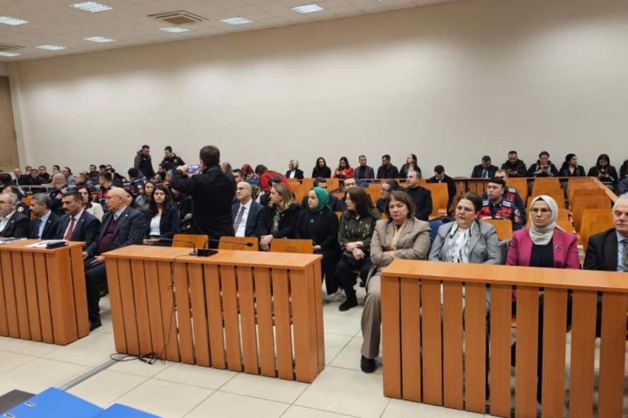
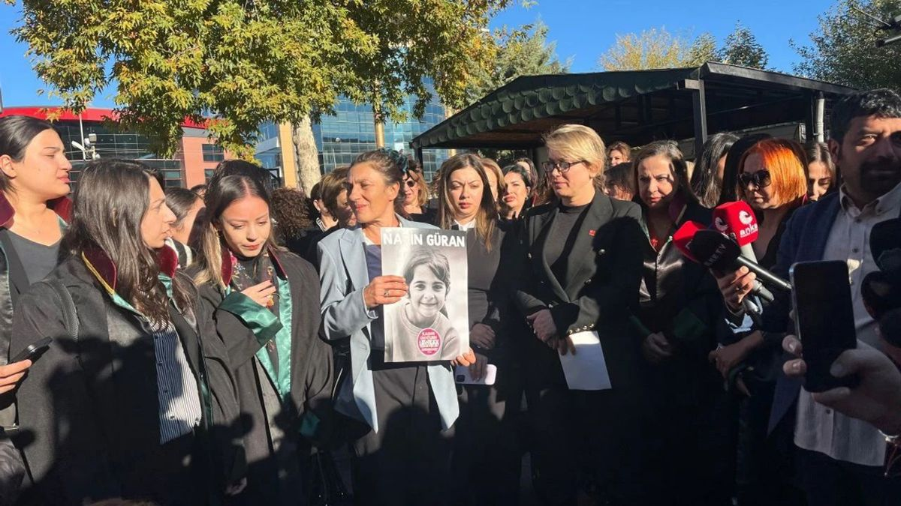
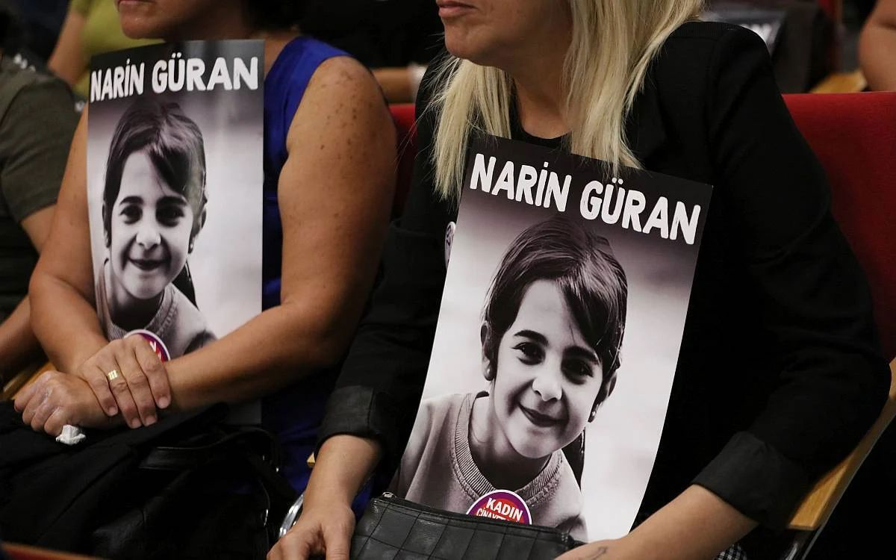

Narin’e hakikat borcumuz var
Olaylar nasıl Güran ailesinin aleyhine döndü?
Aslında orada sadece Narin diye bir çocuk değil, Tavşantepe diye bir köy de kalmadı… Belki de sizler de düşüncelerinizi bir de bu perspektiften gözden geçirmek istersiniz diye paylaşayım istedim. Milyonda bir hakikat payı olsa bile, Narin’e bu hakikati borçlu olduğumuz için…

Narin’le ilgili önceki bir yazımda, “Narin’i son bir çıkış arar gibi aradık” demiştim. Demek ki o zaman da Narin’i arayışımızda tam olarak kayıp küçük bir kızı aramaya tekabül etmeyen daha doğrusu kayıp bir kız çocuğunu aramaktan çok daha fazlasını ifade eden o fazlalığı, o fazla şeyi sezmişim. Ama yine de bu sezginin yorumu eksik kalmıştı. Şimdi anlıyorum ki bir çıkış aramak aslında Narin’i aramak değildi. Zira küçücük kayıp bir kız çocuğu bizi çıkışa ulaştıramazdı. Nitekim o beyhude arayışta hepimiz kendi açmazımıza dolandık. Korkarım ki dava sürecinin Narin’e yattığı yerde huzur vermeyecek bir biçimde sonuçlanmasında da yine hepimizin payı oldu.
Bugün nihayet Narin’in katli olayı ve karar duruşması hakkında günler evvel, hemen ikinci duruşmadan sonra yazdığım yazıya yeniden döndüm. Gerekçeli karar çok kısa süre önce açıklandı. Bu kararı görmeden evvel yazıya son noktayı koymak istememiştim.
Bu yazıyı yazmak zordu. Fakat bir yandan bir türlü bu konuyu düşünüp durmaktan kendimi alamamak, bir yandan da zihnimde dolaşıp duran düşüncelerin silikleşeceğinden korkmak gibi aşırı çelişkili bir ruh halinden de yorularak başlamıştım. Üstelik zaman geçtikçe, düşüncelerimden artık derli toplu bir biçimde söz edemeyecek hale gelmekten de kaygı duyuyordum. Çünkü bu yazıyı Narin’e borçlu olduğumu düşünüyorum. Aslında koca bir ülke Narin’e hâlâ borçluyuz. Ona hakikat borcumuz var ve hakikat ortaya çıkmadı.
Bundan da öte, öyle acı başka bir ihtimal var ki insan gerçekten ifade etmekte bile zorlanıyor. Öte dünyaya ve ruhun azabına gerçekte inanıp inanmamaktan bağımsız bir biçimde şunu söylemek isterim; Yargı sürecinin Narin’in ruhunu ilelebet azapta bırakacak korkunç bir yanlışla nihayet bulmuş olma ihtimali var bu davada. Zira Narin’i şu hayatta belki de canından çok sevmiş, korumuş, kollamış olan annesi, daha biricik kızının başına ne geldiğini öğrenmeden ve mezarını bile görmeden evvel, korkunç iftira ve hakaretlere uğramış, evladının yasını tutamadan namusunu aklamaya davet edilmiş ve en nihayetinde ağırlaştırılmış müebbet hapis cezasına çarptırılmış olabilir. Maalesef bunun oldukça yüksek bir olasılık olduğunu düşünüyorum.
Gerekçeli kararın yayınlanmış olması bu olasılığı ortadan kaldırmadı. Bundan da öte, üç aile üyesine ağırlaştırılmış müebbet hapis cezası verilmesine yol açan en güçlü delildeki, yani geçmişe dönük daraltılmış baz çalışması ve HTS sinyal kayıtlarındaki inanılmaz mantıksal çelişkiler bu kanaatimi daha da güçlendirdi. Cinayeti aydınlatmak için elimizde sadece aynı alanda dönüp duran kişilere ait HTS kayıtları ve lime lime edilmiş saniye ve saliselere bölünmüş bir zaman var. Sadece bu zaman kesitine dikkat edildiğinde bile görülüyor ki kamera ya da HTS sinyal kayıtları zamanının tanıklığı Narin’in niçin öldürüldüğüne dair hiçbir şey söylemiyor. Cinayetle ilişkili aileye yönelik iddiaların doğruluğuna da çok büyük bir gölge düşürüyor. Hatta birçok iddiayı imkansızlaştırdığını bile söyleyebilirim. Gerekçeli kararda delillerin değerlendirilmesi konusunda sözünü ettiğim çelişkilere bilahare yer vereceğim.

Aslında annenin bu davada bir kurban olduğu düşüncesi başından beri hep zihnimde dolaştı durdu. İçimi kemirdi. Dahası şimdi Anne Yüksel Güran gibi oğlu Enes’in ve hatta çoğu kişi gibi bana da oldukça sevimsiz görünen Amca Salim Güran’ın da masum olabileceğini düşünüyorum. Belki güçlerinin yettiği kişilere karşı kötü insanlar olsalar bile pek çok insandan daha kötü olmadıklarını düşünüyorum. Güran Ailesi çok güçlü bir aile de değil bana kalırsa. Tavşantepe’nin de yine ancak herhangi bir köy kadar gizemli ve aynı zamanda herhangi bir köy kadar ortada ve görünür olduğunu düşünüyorum. Güran Ailesi de Tavşantepe Köylüleri de tahayyül fersa bir sırrın korkunç ortakları filan değiller bence… Aslında çok şey göründüğü gibi değil ve çok şey tam da göründüğü gibi… Bana öyle geliyor. Umarım bu yazıda derdimi anlatabilirim.
Herkes gibi benim de Narin cinayetiyle ilişkili çok güçlü kanaatlerim vardı ve hepsi de ailenin aleyhineydi. O kanaatlerden kopmam ve bu noktaya gelmem kolay olmadı doğrusu. Bu düşünce duruşmanın ikinci günü – dinlediğim onca iddia ve savunmadan sonra – öğlen saatlerinden itibaren yavaş yavaş zihnime musallat olmaya başladı. İkinci günün akşamına vardığımda ise düşüncelerim neredeyse netleşti. Geçen günler, okuduğum savunmalar, medyada konunun nasıl yer aldığına ilişkin yaptığım incelemeler o günden bugüne bu netliği bozan bir şey söylemedi. Önceki düşüncelerimi yazarak ya da söyleşi yaparak kamusallaştırmıştım. Bu nedenle bugün ne düşündüğümü de yazmak ve paylaşmak zorundayım. Dediğim gibi Narin’e hakikat borcumuz var. Üstelik yediden yetmişe zan altında kalmış bir köy ve hayatları mahvolmuş iki aile var ortada.
Bu acı olayı, Diyarbakır milletvekili olmak yanında, hem kayıp çocuklara ve aile mefhumunun karanlık yönlerine hem de bu tür olaylara yönelik medya ilgisine kafa yormuş ve bu konularda yazılar kaleme almış bir akademisyen olarak yakından takip ettim. Narin’in kaybolduğu günlerde Diyarbakır İl teşkilatımızdan üç arkadaşımızla Tavşantepe Köyü’ne de gitmiştim. Köyde Narin’in annesi, babası, bir amcası ve bir kardeşi ile görüşmüş ve ev ortamında bulunmuştum. Daha sonra bu konuda iki yazı yazdım. Bunlardan biri Birikim[1]’de yayımlanmıştı. Bu konuda bir de Diyarbakır üzerine başka bir bağlamda hazırlanmakta olan bir kitap için kaleme aldığım ve Narin olayına genişçe yer ayırdığım, henüz yayınlanmamış bir yazım daha var. Bilhassa bu ikinci yazıda evde ailesinin tanıklığında katledilmiş 8 yaşındaki bir çocuk hikayesinin verdiği dehşet duygusu çok belirgin. Olay üzerine ayrıca birkaç söyleşi de verdim. Bu yazı ve söyleşilerde öne sürdüğüm düşüncelerimin bir kısmı bugün kökten biçimde değişmiş durumda.
Peki şimdi paylaşacaklarımın hakikat olduğunu bana kim ya da ne söylüyor? Bu soruyu sorabilirsiniz ve ben de kendi kendime sorup durdum.
Hakikat cesareti
Bu soruyu belki Michel Foucault’nun Doğruyu Söylemek[2] adlı eserinden ilhamla ya da oradan destekle cevaplayabilirim. Foucault, “Parrhesiastes (hakikat cesareti gösteren kişi) olduğu iddia edilen kişi, inandığı şeyin gerçekte hakikat olduğundan nasıl emin olabilir?” sorusunu şöyle cevaplar: “Bence parrhesiastes doğru olan şeyi söyler; zira o şeyin doğru olduğunu bilir ve o şeyin doğru olduğunu bilmesi, o şeyin gerçekten de doğru olmasından kaynaklanır.” Foucault’ya göre, burada bir hakikat öne süren kişi söylediği şeye inanmaktadır. Dolayısıyla hakikati söyleyen, hakikat cesareti göstermiş olan kişi, söylediği şeyin öyle olduğuna inandığı için “hakikati” söylüyordur. (s.13).
Açıklama elbette karmaşık görünüyor. Çünkü belirli bir olguya dair her konuşan (buradaki durumda Narin olayına ilişkin her konuşan) zaten doğru olduğuna inandığı şeyi söylemiyor mudur? Söylediğimizin doğru olduğunu düşündüğümüz her durumda, hakikati söylemiş, hakikat cesareti göstermiş mi oluyoruz? Foucault’nun cevabı, insanın ancak hakikati söylemenin risk ya da tehlike arz ettiği durumlarda ve bunu bir iktidara karşı yaptığı durumlarda hakikati söyleme cesaretini göstermiş sayılacağıdır. Bu bağlamda söyleyeceklerim bundan ibaret. Bu yazıyı yazdım. Çünkü Narin olayına ilişkin düşüncelerimin hakikat olduğuna inanıyorum. Bu anlamda da kayda değer bir risk aldığımı düşünüyorum. Siyasal iktidar kadar toplumsal alanda da ortak söz tarafından kurulmuş iktidarı karşıma aldığımı da içimdeki tedirginlikten biliyorum. Nitekim Foucault bu riskin öyle büyük, yaşamsal bir risk olması gerekmediğini, sadece duyanların hoşuna gitmeme riskini göze almak olabileceğini de söylüyor (s.13).
Narin davası duruşmasında, her ne kadar toplumun büyük çoğunluğunun suçlu olarak gördüğü kişiler (ailenin üç üyesi) ağırlaştırılmış müebbet hapis cezasına mahkum olsa da hakikat talebine tatminkar bir yanıt üretilmedi. Bu tatminsizliği sanıklardan Nevzat Bahtiyar’ın beklenenden çok daha hafif ve sadece bir yıl kadar sonra tahliye olmasını sağlayacak kadar bir ceza almış olması da açıklamıyor. Zira karar duruşmasının ilk gününde savcı tutuklu dört sanık için ağırlaştırılmış müebbet hapis cezası istediğinde de bu mütalaanın etkisi adeta Narin Davası cezasızlıkla sonuçlanmış gibi olmuştu. Çünkü suçlu görünenlerin her birinin en ağır cezalarla cezalandırılması değil, hakikatin açığa çıkması isteniyordu. Narin’i kimin, neden ve nasıl öldürdüğü sorusunun yanıtı bu ağırlaştırılmış müebbet hapis hükmünden çıkmıyordu. Sanıkların “Müşterek fail” olarak tanımlanmaları da yetmiyordu. Hakikat isteniyordu. Şimdi gerekçeli karardan sonra bunun daha güçlü bir biçimde istendiğini görüyorum.

Fakat ne yazıktır ki aşırı yoğun kamuoyu ve medya ilgisi, Narin hakikatinin açığa çıkma şansını neredeyse tümden yok etmişti. Olay toplumsal kutuplaşmanın farklı uçlarında yer alanların her birinin kendi önyargıları ve kabulleri tarafından o kadar karmaşıklaştırılmış ve hakikatin üzeri o kadar kapatılmıştı ki ortaya çıkma şansı neredeyse hiç kalmamıştı.
Adeta Edgar Alan Poe’nun, psikanalitik çözümlemelere konu olmuş ve Lacan ve Derrida gibi düşünürler tarafından da tartışmaya konu edilmiş Çalınmış Mektup adlı öyküsündeki duruma benzer bir durumla baş başa kalmıştık. Söz konusu hikayeyi kısaca özetlersek, çalınmış ve köşe bucak didik didik aranan önemli bir mektup esasen ortadadır, yani aslında saklanmayarak saklanmıştır. Köşe bucağı ve en akla gelmedik yerleri araştırarak ulaşılmaya çalışılan mektup, herkesin gözünün önündedir. Merak eden linkten[3] öyküyle ilgili iyi bir değerlendirmeyi okuyabilir. Aşırı gizem yüklediğimiz Narin’in canavarca katli olayında da tıpkı Edgar Alan Poe’nun kayıp mektubu gibi orta yerde duran zarf (hakikat) artık bulunamaz ve görülemez hale gelmiştir. Hatta onun orada, yani herkesin gözü önünde olduğu akıldan bile geçirilemez olmuştur. Sanırım bunu kimse inkar edemez.
Narin Davasının duruşması Diyarbakır’da yapıldı ve 26-28 Aralık tarihleri arasında tam üç gün sürdü. Her sabah duruşmanın başlama saatinde orada oldum ve zamanımın büyük kısmını Diyarbakır Adliyesi’ndeki duruşma salonunda sanıklar, avukatlar, sanık yakınları ve siyasetçiler arasında geçirdim. Aslında bu kadar kalmayı düşünmemiştim. Fakat yargılamanın gidişatı, dile gelenler ve daha birçok şey beni oraya kilitledi. Karar duruşmasının ilk gününde farklı partilerden onlarca milletvekili de Diyarbakır’a gelmişti. Önceki süreçlerde Diyarbakır’a Adalet, İçişleri, Aile ve Sosyal Hizmetler Bakanı da gelerek Narin’in mezarını ziyaret etmişti. Narin Güran[4] cinayetinden sonra TBMM çatısı altında da kısaca Narin Komisyonu olarak adlandırılan, “Çocukların Her Türlü Şiddet, İhmal ve İstismardan Korunarak Akıl, Ruh ve Beden Sağlıklarının Gelişimi İçin Alınması Gereken Tedbirlerin Belirlenmesi Amacıyla bir Meclis Araştırması Komisyonu” kurulmuştu. Duruşma günü komisyonun birçok üyesi de Diyarbakır’daydı. Esasen Diyarbakır Milletvekili olarak oradaydım ve DEM Parti’yi temsilen davayı izledim ancak olayla kişisel olarak birçok kişi gibi ben de çok ilgiliydim zaten. Bu nedenle, açık ve net biçimde söylemek isterim ki burada yazacağım görüşler de bu görüşlerin sorumluluğu da bir sosyal bilimci ve bir yurttaş olarak sadece ve sadece bana aittir. Yıllar yılı yazıp durmuş bir akademisyen olarak milletvekilliğim sırasında yazdığım diğer yazılar gibi Narin hakkında yazdığım önceki yazılar ya da bu yazı hakkında partiye hiçbir bilgi de vermiş değilim. Bu kez düşüncelerimi yetkili birileriyle paylaşmak isterdim fakat bu sorumluluğu da paylaşmak anlamına gelirdi. Dediğim gibi yanılmak insana mahsus, yanılmışsam ve hakikat üstündeki perde kalktığında bu yazı yanlışlanırsa bu hata da tümüyle bana ait olacak.
Karar duruşmasının ilk günü akşamına kadar da belirli bir noktaya fazlasıyla takılıyor olmakla birlikte ben de birçok kişi gibi öncelikle Narin cinayetinin evde gerçekleştiğini düşünüyordum. Bunun birçok nedeni var. Öncelikle tepsi gibi dümdüz, yokuşsuz ve tümseksiz bir alana yayılmış Diyarbakır şehir merkezinden sonra, Çarıklı yönüne sapıp sonra da Tavşantepe Köyü’ne yokuş yukarı kıvrıla kıvrıla ulaştığınızda, o daracık sokaklara ya da yan yana sıralı evlere, bir yabancının kimseye görünmeden girip çıkmasının imkansız olduğunu düşünüyorsunuz. Bundan da öte daha olayın ilk dakikalarından itibaren yayılmaya başlayan “Kürtler… Oralarda olur öyle şeyler” gibi sözleri hiç ciddiye almamış olsanız da, kabul etmek gerekir ki başka bazı söylentilere zihnen kapılmış oluyorsunuz. Hüda Par, Hizbullah, AKP, Güran Ailesi’nin karanlık işleri, Kuran Kursu söylentileri… Çünkü her biriyle ilişkili maalesef pek de hayırlı şeyler söylemeyen bir hafızamız var. O yüzden de Tavşantepe’yi ilk ziyaret ettiğimde, günün sonunda aklıma yatan ilk cinayet teorisi, Narin’in “görmemesi gereken bir şey gördüğü” olmuştu. Son görüntüsünün, okul kameralarınca kaydedildiği anlaşıldığında ise her neye tanık olduysa o şeyin evde cereyan ettiğine ikna olmuştum. Çünkü Narin Kuran Kursundan arkadaşlarıyla dönerken bir noktada onlardan ayrılarak evine doğru giden patikaya sapıyordu.
Kanaatleri besleyen de çok şey vardı tabii. Örneğin köy ziyaretimizde, Narin’in evine çok yakın bir noktada bir kadın önümüze fırlamış ve “Çocuk eve gelmiş, gelmiş, çantasını merdivenlere atmış!” demişti. Oysa o tarihe kadar henüz kimse çocuğun eve dönmüş olduğuna dair doğru ya da yanlış bu tür bir kanıt öne sürmemişti. Nitekim sonra anlaşılıyor ki Narin’in çantasının ölüm anında büyük ihtimalle zaten boynunda olma ihtimali çok daha yüksekti. Nevzat çantanın kapalı biçimde çocuğun boynunda olduğunu söylüyordu ve çanta da zaten Narin’in cansız bedeninin bulunduğu çuvaldan çıkmıştı. Olayın bu tür polisiye ayrıntılarına mümkün olduğunca girmek istemezdim, fakat köyde fısıltı gazetesinin nasıl her an her dakika çalışıyor olduğunu gösteren bu olay önemli. Buradan da anlaşıldığı üzere köylüler aslında iddiaların aksine büyük bir ketumluk içinde filan da olmadılar. Olayı aileyle birlikte kolektif bir suskunluğa gömüp örtbas ediyor gibi görünüyorlar ama aslında durum böyle değil. Tavşantepeliler’in de hiçbir şey bilmedikleri halde bir şeyler biliyormuş gibi yaparak kendi aralarında konuşup durmuş olma ihtimalleri daha yüksek. Muhtemelen her birimiz gibi Tavşantepeliler de kameralara konuşmasalar da dolaşımdaki söz kalabalığını kendi aralarında hem çoğaltıp hem bunları daha sonra aile efradının suçlarının kanıtı gibi yeniden dolaşıma soktu. Bütün ülke gibi…
Olaylar nasıl bu hale geldi? Nasıl bu kadar Güran ailesinin aleyhine döndü?
Medya mensupları ve meraklı gözler tarafından adeta gözüne far tutularak, tavşan gibi köşeye kıstırılmış bir annenin, kırık dökük bir Türkçe ve hatta kırık dökük bir Kürtçe ile söylediği sözler, hızla aleyhine dönmüş ve daha ilk günlerden başlayarak hakkında korkunç iddialar ortaya atılmasına yol açmıştı. Daha ilk günlerde yapılan birkaç sosyal medya paylaşımındaki ithamlar da bu durumu hızlandırmıştı. Yüksel Güran’ın jandarmaya henüz Narin’in cansız bedeni bulunmazdan evvel, “oğlum Enes’i nasıl koruyabiliriz” demiş olması, kızının ölmüş olduğunu ve katilin de Enes olduğunu bildiğinin kanıtı sayılmıştı. Buna göre, canavar annenin öncelikli meselesi oğlunu korumaktı. Küçük bir kız çocuğu, Narin, annenin umurunda bile değil deniyordu. Oysa daha ilk dakikalardan itibaren Enes’in adı o kadar çok dedikoduya, iddia ve ithama karışmıştı ki anne Yüksel Güran’ın hem kızının kaybına kahrolması hem de oğluna ilişkin söylentiler hakkındaki endişesini dile getirmesinden daha doğal ne olabilirdi? Yetersiz Türkçesi ile söylediği her şey bir tür itiraf/delil olarak görülmüş aynı zamanda her bir jesti, hareketi, bakışı kameralar altında samimiyet testine tabi tutulmuştu. Kimi kaşının duruşundan kimi gözünden yaş gelmemesinden söz ediyordu. Oysa Yüksel Güran biricik kızının kaybolmasıyla birlikte maruz kaldığı aşırı ilgi ve onlarca kamera altında kaygısını ve üzüntüsünü yaşamak zorunda kalmış bir anneydi. Bir anda bütün Türkiye’nin tanıdığı biri olmuştu ve bu onun seçimi filan değildi. Çok üzüldüğünüz ve kahrolduğunuz bir anda, acınızı ve üzüntünüzü kameralar altında kanıtlamaya açıkça ya da imalar yoluyla zorlandığınızı bir düşünün. Dehşet verici değil mi?
Aslında sadece duruşmada dinlemekle yetinmeyip sonradan ikisini özel olarak istediğim savunma ve beyanlardan en açık şekilde anlaşılan şey bu: Annenin, Enes’in ve Babanın ve hatta Amcanın, bir anda aleyhlerine dönen tutum ya da ifadelerinin neredeyse tamamı, dolaşıma giren birçok iddia üzerine kendilerinin de ifadelerinde bu bilgilere yer açması, şaşkınlığa düşmeleri, etraflarındaki çember akıl almaz bir nefretle daraltılırken öğrendiklerine bağlı olarak bazı ifade değişikliklerine gitmeleriyle ilişkili. Bu ifade değişikliklerinin hiçbiri de örneğin Nevzat Bahtiyar’ın ifade değişiklikleri kadar ciddi ya da vahim değil.
Baba Arif Güran’ın duruşma salonunda masaya kapanarak hıçkıra hıçkıra ağlarken söylediği gibi günlük hayat rutinleri saniye saniye dakika dakika birimlerine ayrılır ve didik didik edilirken onların hayatı ve canı gitmişti. Korkunç bir endişe ve acı içindeyken bir yandan da akıl almaz ithamlar altında ne yapacaklarını şaşırmıştı hepsi. Bazı şeyleri basitçe tam olarak hatırlayamıyorlardı, bazı şeyleri ise duydukları yeni bilgiler ışığında revize etmişlerdi. Buna iki örnek verelim: Baba ve Amca kendilerinin ve Enes’in, Narin’in kaybolduğu saat hakkında çelişkili ve yanlış bilgi verdikleri iddiası karşısında mealen aktarırsam şunu söylüyordu: Önce 15:00 sonrası dedik, okuldan arkadaşlarıyla o saatlerde çıkmış çünkü, fakat sonra köyden biri 17:30 sonrası, diğeri daha sonraki bir saatte Narin’i gördüğünü çok emin biçimde söylüyor. Biz de bütün aile duyduğumuz her habere koşturuyoruz, soruşturuyoruz, bizden başka koşuşturan yok zaten. Sonra da en son şu saatte görülmüş diyoruz. Kısacası köyde çocuğu ararken duydukları ışığında, Narin önce şu saatten, sonrasında da hayır bu saatten sonra kayıp diyerek çocuğun kayboluş saatini revize ediyorlar. Değişen bu ifadeler de bir anda ağır suçlamalar olarak onlara geri dönüyor.

Nitekim Narin’in köyde farklı kişiler tarafından akşam saatlerinde görüldüğü konusunda, Amca Salim Güran’ın herhangi bir manipülasyonda bulunduğu iddiası da doğrulanamıyor. Medya, karşı taraf ya da kurum avukatları beyanlarında Salim Güran’ın bu kişileri manipüle ettiğini söylese de daha sonra Narin’i gördüğünü iddia eden kişiler yine mealen aktarırsam, biz Narin’i gördüğümüz saat hakkında kendi aramızda yanıldığımızı konuşurken o da bizi duydu, böyle anlatın dedi gibi muğlak ifadelerle Salim Güran’ı bu yanlış saat bilgisine ortak etmeye çalışıyorlar. Esas olarak sanıklarla ilgili ifade değişikliği iddialarının en ciddisi bile, çok somut biçimde bir olayı karartma yeteneği olmayan, “önce öyle dedi, sonra böyle dedi” etrafında dönüyor. Üstelik bu ayrıntılara yoğunlaştıkça buradan elde edildiği öne sürülen her yeni bilginin aile üyelerine dair önceki ithamlara çeliştiği ve bu ithamları zayıflattığı da anlaşılıyor. Fakat bunu dikkate alan da maalesef yok.
Böyle birbirini çürüttüğü halde aile ile ilgili beyan ve iddialarda ardı ardınca tekrar eden ve suçlarını kanıtlamak için kullanılan çok bilgi var. Örneğin Narin görmemesi gereken bir şey gördüyse ve evde aile içinde bunun için katledildiyse, iç çamaşırlarında ve giysilerinde bulunan PSA (cinsel istismar bulgusu) bu durumda neyle açıklanıyor? Enes ya da Amca Salim, Narin’i bir şeye tanık olduğu için eve varışını takip eden kısacık zaman diliminde (8 dakika) ve panik içinde hem öldürüp hem aynı anda istismar etmiş mi oluyor? Yoksa Nevzat, Narin’in cansız bedenini Salim Güran’dan tehdit altında ve korku içinde gömmek üzere aldıktan sonra, dere kenarına götürüp gömmeden evvel istismar mı ediyor? Bu durumda da aslında tehdit altında bir çocuğun katline ortak edilmiş, korkmuş ve de yıllardır zaten Güran Ailesi tarafından sindirilmiş bir adamın hem bu istismarı yapabilecek sükunete kavuştuğuna hem sonra gidip köyde hiç bir şey olmamış gibi baldızına uğrayıp çay içtiğine ve sabahtan eşiyle birlikte planladığı gibi oradan peynir alarak eve döndüğüne mi inanacağız? Ve eğer olaya bu şekilde iştirak ettirildiyse ailenin yanında günlerce “ah vah” ederek Narin arayışlarına ortak olmasını nasıl açıklayacağız? Ona “Asla yanımızdan ayrılma” mı dediler? Peki bunu niye dediler? Olsa olsa “bir süre çok ortada dolanma” diyecekleri bir durum söz konusuyken hem de…
Hayatın olağan akışı
“Hayatın olağan akışı” aileye karşı itham ve iddialarda çok sık geçtiği için ben de “bu olağan akışa” ara ara değinmek zorunda kalacağım. Bu durumda hayatın olağan akışına daha fazla uyan senaryo şu olamaz mı acaba. Sadece farazi bir senaryo olarak bir an bu perspektiften de bakamaz mıyız? Nevzat, evine ulaşmak üzere patika yola saparak (saat 15:11’de) arkadaşlarından ayrılan Narin’le bir iki dakika içinde karşılaşıyor. Çok yüksek bir ihtimalle olay böyle. Çünkü baz raporlarına göre Nevzat hemen takip eden bir iki dakika içinde Salim ile Arif’in evi arasındaki patika yolda. Anladığım kadarıyla sadece tartışmalı baz raporu değil, Nevzat’ın kendi beyanına göre de böyle. Çünkü o dakikalarda Salim’i aradığını söylüyor. Suyu kesik olduğu için Muhtar Salim’i arayıp söylemek istemiş. Bu, 42 saniyelik telefon görüşmesi HTS arama kayıtlarında da mevcut. Telefondan hemen sonra çıkıp annesinin bahçesindeki suyu açtığını ve oraya bağlı hortumu alarak kendi bahçesini suladığını söylüyor. Annesinin bahçesindeki suyu açabilmek için tam da Narin’in o dakikalarda geçmekte olduğu tarafa çıkması ya da orayı görmesi gerekiyormuş. Ailenin avukatları bunu hiç kuşkuya yer bırakmayacak şekilde açıklıyor.
Ailenin avukatları yanıtı verilemeyen birçok soru sorarak önümüze başka bir perspektif de koydu aslında. Bunların bir kısmı mealen aktaracağım şu sorulara tekabül ediyor ve de devamında başka soruları akla getiriyordu: Nevzat hep aynı yoldan geçen Narin’i o gün de görüp, artık önceden tasarlamış mı tasarlamamış mı bilemeyiz ama anlık dürtüsel bir davranışla ya da aileye yönelik haset ve hasmane duygularla bir anda çocuğu kendi evinin ahırına/arkasına sürüklemiş ya da bir şeye bakmak üzere kendisiyle gitmeye ikna etmiş olamaz mı? Dahası, çocuğun direnmesi ya da çığlıklar atması üzerine bu saldırı hızla bir cinayetle sonuçlanmış olamaz mı? Narin’in cansız bedenini dere yatağına gömdükten sonra yaptığını söylediği şeylerdeki (köye gitmek, çay içmek, peynir almak gibi) rahatlık, Nevzat’ı korkutulmuş ve suça iştirak ettirilmiş zavallı bir adam olmaktan çok, böyle bir karaktere daha fazla yaklaştırmıyor mu? Sonraki günlerde acılı ailenin yanından ayrılmama hali de bu senaryoyla daha fazla örtüşmüyor mu? Ortadan kaybolmadığı ve aileye destek olduğu için ailenin hiç şüphelenmediği Nevzat’ın, 19 gün boyunca ahırda ya da evinde bütün delilleri de ferah feza karartmış olma ihtimali yok mu? Bunların hepsi sadece birer soru. Düşünülmesi ve sorulması gereken sorular, nitekim mahkemede de soruldu.
Olayların ve hayatın olağan akışına gelince, bu akışa en net biçimde sığmayan tek şey çocuğun son görüldüğü an ile Nevzat’ın aracının Eğertutmaz Deresi yolunda görüldüğü an arasında geçen zaman. Bu zaman tasarlanmamış bir aile cinayetine imkan tanımıyor. Cinayetin tasarlanmış olabileceği iddiası da hiçbir makul açıklamaya kavuşamıyor. Narin önceden bir şey görmüş olsa o gün güle oynaya Kuran kursuna gitmesine izin verilemezdi. Çünkü gördüğü bildiği her neyse eğer böyle korkunç bir cinayete yol açacak nitelikteyse onu birilerine söyleme ihtimali asla yabana atılamazdı.
Evet, maksimum yarım saate sığdırılmış bir aile cinayetine hemen hemen hiçbir şekilde ikna olamıyoruz. Çünkü bu yarım saatin tümü evde geçmiyor zaten. Çocuğun arkadaşlarından ayrılıp evine ulaşması için hiç değilse 3-4 dakika patika yolu tırmanması gerekiyor. Nevzat’ın her ne şekilde olursa olsun Salim’in çağırması üzerine eve giderek Narin’in cansız bedenini teslim alıp 2 kilometre ötedeki Eğertutmaz Deresi yolunda arabayla belirmesi için de en az 7-8 dakikayı daha tüketmiş olması gerekiyor. Hele ki iddia ettiği gibi önce Narin’in cansız bedenini baba evinde Salim’den battaniyeye sarılı biçimde teslim alarak kendi evinin oraya gittiğini, sonra pencereden ahıra attığını ve ardından ahıra girip çocuğun bedenini bulduğu bir çuvala yerleştirdiğini kabul edersek, bunun 7-8 dakikadan daha az bir süre olması neredeyse imkansız. Zaten gerekçeli kararı incelersek görebileceğimiz üzere, Narin’in eve varışı ile cesedinin Arif’in evinin bir odasında Nevzat tarafından görülüşü arasında sadece ve sadece 8 dakika var. Buna ilerleyen sayfalarda değineceğim. Hayatın olağan akışına göre müşterek faillik durumuyla işlenen bir aile cinayeti bu süreye sığabilir görünmüyor.

8 dakika
Narin’in kendi evinde ya da ahırında bir tanıklığı takip eden panik ve kargaşa içinde kolektif biçimde öldürülmesi ve cesedin Salim tarafından odada Nevzat’a teslim edilmesi için 8 dakika… Bu senaryoda diğer her şey şu ya da bu şekilde hayatın olağan akışına göre açıklanabilir ama bu açıklanamaz. Anne, Salim ve Enes’in eve gelir gelmez hep birlikte Narin’i katletmek için hiçbir makul nedenleri yok, böyle bir neden bulunamadı. Böyle tasarlanmış bir cinayet söz konusu değil. Olayı Enes bir nedenle, Narin’e yakalandığı için yaptıysa, annenin de ister gözünün önünde ister kendi ahırlarında (ki öyle iddia ediliyor) gerçekleşen bu korkunç olayı görüp hiç etkilenmemiş ve derhal örtbas etme çabasına girişmiş olması mümkün değil. Bunu söylediğinizde “Mümkün, çünkü aile profesyonel!” deniyor. “Neyin profesyoneli” diye sormak gerekiyor. Kendi evladını öldürüp 8 dakika içinde cesedini bir yabancının eliyle kedi yavrusu gibi kaybettirmeye ve bir mezarının bile olmamasına razı gelmenin profesyoneli mi? Böyle bir profesyonellik olamaz bence… Evet, insanlar kendi evlatlarını korkunç biçimde katledebilirler, ediyorlar da. Ancak bu bilgiyi, her ailenin de bunu kolaylıkla yapabileceğinin garantisi gibi göremeyiz.
Narin’in kayıp olduğu günlerdeydi sanırım, Gazeteci Ayşe Hür bir sosyal medya mesajında mealen söylersem, “Narin belli ki sevilmiş, şımartılmış, süslenmiş, mutlu bir çocuk” demişti. Bunu çok sayıda fotoğrafına bakarak söylüyordu. Gerçekten de öyle görünüyor. Saçları güzel güzel taranmış, örülmüş, güzel kıyafetler giydirilmiş, mutlu gülümseyen bir çocuk… Nitekim Baba Arif Güran’ın uzun konuşmasının her satırında bunu hissetmek çok mümkündü. Anne Yüksel Güran biz mutlu bir aileydik diyordu. Çok acıydı aynı zamanda. Katledilmiş evlatlarını çok sevmiş olduklarını kanıtlamaya zorlanıyorlardı. Hep birlikte biz onları buna zorluyorduk…
Duruşmanın birinci günüydü sanırım. Bizler duruşma salonunda yerlerimizi aldıktan sonra, anne içeriye getirilmişti. Tam önümüzden geçerken bir an durmuş ve bana “Bir anneye dua edin” demişti. Bu sözleri, o anki bakışı ve köyde ilk gördüğüm zamandan bu yana ufalıp küçücük kalmış bedeni ve o sapsarı yüzü aklımdan hiç çıkmıyor. Ben feminist bir akademisyenim her şeyden evvel. Bir kadının bu şekilde evladıyla birlikte kurban edilmesine razı gelemiyorum. Yüksel Güran hayatta olan evladı Enes’i korumak için sessiz kaldığı gerekçesiyle kurban edilseydi buna da razı gelemezdim. Çünkü sessiz kalmanın bedeli ağırlaştırılmış müebbet hapis değil. Ama Güran ailesinin Narin’in katledildiği saatlerdeki hayatlarının olağan akışı, annenin Enes’i korumak için kendini feda ettiğini söylemiyor. Annenin herhangi bir şey bildiğini söylemiyor. Enes’i de zaten görüldüğü üzere hiçbir şekilde koruyamamakla kalmayıp, biri 6 yaşında olan iki küçük çocuğunu da cezaevine düşmekle sahipsiz bırakmış oluyor ki bu akıl alır bir şey değil… Bu saatten sonra müebbet hapis cezasına çarptırılmış bu üç mahpustan biri cinayeti üstlense de bunun inanmak çok zor olacak… Maalesef Narin olayını kuşatan hakikati, el birliğiyle neredeyse sonsuza dek inandırıcı biçimde açığa çıkmamaya mahkum ettik. Bu yüzden böyle uzun uzun yazıyorum. Önceki yazdıklarımın ve söylediklerimin bir tür kefareti gibi bir yazmak…
Tekrar ifade edecek olursam, Anne Yüksel Güran’ın Narin’in öldürüldüğüne tanıklık etmesi, buna engel olamaması ya da geç kalması fakat hiç saniye kaybetmeksizin olayı örtbas etmeye girişmesi mümkün değil. İnsan kendisi ya da yanındaki biri bir kavanoz kırsa anında kendini toplayıp temizlemeye girişemiyor. Evet, Narin’in öldürülmesi, annenin bunu görmesi, amcayı çağırması, amcanın eve gelmesi, hızla ortak bir plan kurup Nevzat’ı çağırmaları için sadece ve sadece 8 dakika var. 8 dakikada bunlar olmaz. Diyelim ki Salim zaten o dakikalarda kardeşi Arif Güran’ın evindeydi. Yine de mümkün görünmüyor bu. Bu olayda somut bir delil varsa o da bu. Eğer hayatın olağan akışından söz ediyorsak tabii.
Olamayacak çok şey var. Olayla ilgili en vahim iddialardan biri de “amca, yeğen ya da erkek kuzenler arası ensest/eşcinsel ilişki” çerçevesinde gündeme geliyor sanırım. Oysa Enes’in ahırda amcasıyla ya da kuzeniyle – görülmesi istenmeyecek bir durumdayken – Narin’e yakalanmış olması da mümkün değil. Evde başkaları varken evin dibindeki ahırda bu riski almak akıl kârı değil çünkü. Amca ile ilgili böyle bir geçmiş öyküsü ve böyle bir bulgu yok. Enes’le ilgili de yok. Kuzen ya da kuzenlerle ilgili olarak da yok. Üstelik böyle bir anda yakalanan kişilerin anında bu kadar organize olup 8 dakikaya bu cinayeti ve Nevzat’ı da dahil ederek (!) cesedi yok etme planını sığdırması yine imkansız. İmkansız…
Son olarak diyelim ki diğer bir ihtimal, Enes kendisi kardeşini istismar etmeye kalktı ve kardeşinin direnmesi üzerine panikleyerek onu öldürdü. Enes’in bedenindeki çeşitli yerlerdeki çizik ya da sıyrıklar böyle açıklandı. Tekrar soralım, bir anne evladını da (Enes’i) koruyamadığına göre, iki küçük çocuğunu annesiz bırakarak, bunca hakarete razı olarak bu korkunç suça niye iştirak etsin? Bu tıynetteki bir evladı bu şekilde koruyamayacağını da muhtemelen biliyordur. Haydi anneyi anladık, fakat Amca, eğer Enes bunu yaptıysa bu suçu niye üstlensin? Çok üzgünüm ama bütün meseleyi ince ince düşününce günümüzde ne ensest, ne silah kaçakçılığı ne eşcinsel ilişki, ne istismar iki ailenin birden mahvedileceği biçimde bir sırrın konusu olmaz. Olması için bir neden yok. Narin zehir gibi akıllı bir çocuk, bir köşeye çekilip “bak bunu birisi duyarsa, baban duyarsa başımıza şunlar şunlar gelir” demeleri bile yeterdi. Korkutmaları ya da ikna etmeleri yeterdi. Diyelim ki edemediler, diyelim ki öldürdüler, bunca suç fazlasıyla üzerlerine yığılmışken ya anneyi ya Enes’i ya da amcayı kurtarmak için bir şey yaparlardı. İlk zamanlar hepimiz ailenin korunduğundan çok emindik. Şimdi ailenin üç üyesi ağırlaştırılmış müebbet hapis cezasına çarptırıldığına göre en azından o güçlü ve korunan aile kanaatimizi sorgulamamız gerekmez mi?
Kısacası bu aile korunmuş görünmüyor. Korunmadılar. Aile kendi kendini de koruyamadı. Aslında ailenin en nihayetinde AKP nezdinde, Tavşantepe kırsalında yaşamakta olan Kürt bir aileden öte bir şey olmadığını verilen hükümde gördük. Üç üyesinin birden – birçok iddia çürütülmüş, birçok ama birçok medya yalanı ortaya saçılmış olduğu halde – bu cezalarla baş başa kalması bunu gösteriyor. Hiçbir delilin lehlerine yorumlanmadığı, kamuoyu ve medya baskısı nedeniyle hakikate gözlerin kapatıldığı görülebilir burada. Üstelik bu tür olaylarda tecrübesiz olan jandarmanın ilk yazımda da belirttiğim gibi olay yerine adeta vinçle dalarak delilleri ya mahvettiği ya da geçen günler içinde yok olmaya terk ettiği gerçeği de iki tarafın avukatlarının da kabul ettiği bir durum. Olay günlerce jandarmanın inisiyatifinde araştırılıyor. Nevzat suçunu itiraf etmek zorunda kaldıktan sonra bile ne yakınları anında gözaltına alınıyor, ne evi ne ahırı anında etkili biçimde araştırılıyor. Ailenin avukatlarının söyledikleri bunlar. Karşı tarafın avukatı gibi davaya müdahil Aile Bakanlığı ya da Diyarbakır Barosu da bu noktada başka bir açıklamada bulunmuyor. Arandı demiyor. Hatta Nevzat’ın sorgusunda ailenin avukatının Nevzat’ın karısı ile ilgili sarf ettiği bir ifadenin mahkeme başkanı tarafından derhal önü alınıyor. “O şüpheli değil, o şüpheli değil” diyerek hızla kapatılıyor konu. Savunma metninde bunu açıkça görebilirsiniz. Fakat aslında aileyle temas etmiş herkes gibi cesedi taşıdığını kabul etmiş bir sanığın ailesinin de gerekirse “şüpheli” olabileceği durumların ifadesine izin vermek gerekmez mi? Bilemiyorum, bu hukukun alanına giren bir soru.
Hakikati yutan obruklar
Güran ailesi aleyhine dolaşıma giren birçok itham ve iddia açıkça asılsız çıktı. Halıların yıkandığı, tüm aile üyelerinin Whatsapp kayıtlarını sildiği (sadece Amca Salim Güran telefondaki seks içeriği nedeniyle) kayıtları siliyor, öyle söylüyor. Bazı aile üyelerinin de mesajları sildiği iddiası var. Öyle sistematik tüm aile, tüm köy kayıtları sildi diye bir şey yok. Üstelik bir düşünelim, her an gözaltına alınma ihtimalimiz olsa hepimizin telefonumuzu gözden geçirmeyeceğimizi kim söyleyebilir? Çünkü bu durumda telefonunuz elinizden gidiyor ve aylarca gelmiyor. Hatta çoğu kez hiç gelmiyor. Aile ile ilgili ithamlar çocuk kayıp olduğu andan itibaren devreye girdiğinden, birçok nedenle mesajlarını silmiş olanlar da çıkmıştır. Olay sonrasında yüksek sesle müzik dinleyerek gizli toplantılar yaptıkları, Eğertutmaz Deresi’nin debisini yükselterek Narin’in cansız bedenindeki cinayet bulgularını kaybettirdikleri, Salim Güran’ın aracının gece 22:00 civarında Eğertutmaz deresi yolunda görüldüğü; bunların hiçbiri doğrulanmıyor. Özellikle Salim’in aracı konusu doğrulanmış gibi görülse de bu iddia da gerekçeli kararda kanaate varmış olmak dışında bir ifade ile kendine yer bulamıyor. Söz konusu aracın kime ait olduğu, markası ve plakası asla tespit edilememiş. Hâl böyleyken, Diyarbakır Barosu beyanında bile hem tespit edilmediği bilgisi paylaşılıp hem de tespit edilmemiş olsa da Salim Güran’a ait olduğuna kanaat getirildiği ifade ediliyor. Oysa kendi telefonundaki ses kayıtlarından Salim Güran’ın o dakikalarda araçta ya da o yolda değil, köyde ve insanlar arasında olduğu anlaşılmış. Bunu avukatı söylüyor ve bu açıklamaya itiraz edilmiyor. Buna rağmen iddialar tekrar ediyor. Post-truth çağında adalet maalesef böyle işliyor, gerçeklerin üzerinden atlaya atlaya… Bunun gibi ahırda ve tepede bulunan kan lekelerinde hiçbir DNA bulunmadığı ya da lekelerin meydana geldiği zaman tespit edilmediği halde “insan kanı olduğu açıklık kazandığından, Narin’e aittir” deniyor. Bu ağır dezenformasyon altında inceleme yapan mercilerin de etkilenmiş olacağı unutularak, konuyla ilişkili birçok delilin cinayetin aile içinde işlendiği bilgisiyle “uyumlu” olduğu söyleniyor.
Dün ne yediğimizi, kimlerle görüştüğümüzü olağan ve sakin bir günde bile birçoğumuz hatırlamakta güçlük çekiyorken, gündelik hayatın ayrıntılarına dair unuttuğu her şey Enes’i katil yapmaya yetiyor. Enes’in bedenindeki sıyrıklar yine ihtimaller çerçevesinde Narin’le boğuşma ile “uyumlu” bulunuyor. Bir de boğuşma varsa ve bedenin ilişkisiz yerinde belirli ya da belirsiz lekeler, sıyrıklar söz konusuysa, Enes 8 dakikaya ne çok şeyi ve ne çok insanın yanı başında sığdırıyor diye şaşırmak gerekmez mi? Gerçekten devasa boşluklar, az üzerinde dursanız, çöküp hakikati yutuverecek devasa obruklar var.
Oysa tam da şu anda kendi elimde ince kesikler halinde iki çizgi var. Tırnaklarıma çok yakın noktada. Biri hafiften enfekte olmuş. Bu sıyrıkların nerede ve nasıl oluştuğuna dair hiçbir fikrim yok. Kuaförde mi, geçtiğimiz günlerde ciddi bir dolap çekmece temizliğine giriştiğimde mi? Sadece bu da değil, zihnimi ne kadar yoklasam da köye yaptığımız ziyaretin iki gün sonrasında, bize yaklaşıp “Narin eve gelmiş, gelmiş, çantasını merdivene atmış!” diyen kadını, eve varışta mı çıkışta mı gördüğümüzü bir türlü hatırlayamıyorum. Baskı altında değildim, o gün oraya gittiğimde yorgun değildim. Ama olan bu. Çünkü gündelik hayatta birçok şeyi üzerinden iki gün geçince hatırlamamız zordur. Bu gerçek bu kadar açıkken, aile yakınları çok mühim bir bilgiye tekabül etmeyebilecek noktalardaki çok büyük olmayan ifade farklılıkları nedeniyle müştereken katil ilan edildi. Oysa bu olaydan kendini kurtarabilmesinin tek garantisi olacak bir bilgiyi en temel bir bilgiyi hiçbir şekilde unutkanlıkla açıklanamayacak önemli bir bilgiyi en az üç kez kökten biçimde değiştirerek ifade veren Nevzat’ın bu çelişkilerinin, çocuğu öldürmüş olabileceğiyle ilişkisinin kurulması gerekmez miydi? Nevzat Narin’in cansız bedenini Amca’dan nerede ve nasıl aldığı konusunda en az üç kökten farklı ifade verdi. Çok ama çok acayip bu duruma rağmen Nevzat’ın bu çarpıtması sadece “delil karartma” bağlamında yorumlandı. Nevzat’a, yani cesetle temas ettiği açık olan tek kişiye “olağan şüpheli” muamelesi yapılmadı. Zira 19. günde Nevzat’ın aracı kamera görüntülerinden tespit edilip evine baskın yapıldığında ülkecek elbirliğiyle yarattığımız senaryo o kadar giriftleşmiş, “suskunluk sözleşmeleri”nden tutun, akla hayale gelmez her teoriye öylesine eklenmişti ki bunca teori heba edilemezdi.
Diğer bir deyişle, olayın sonunda “katilin uşak çıkması”, yani basit bir istismar ve cinayet olması ihtimali artık kabullenilemezdi. O kadar çok tartışma programı o kadar çok yazıdan, sosyal paylaşımdan, şeytanlaştırılmış bir aile ve köyden de vazgeçilemezdi. Basitçe köylülerin hiçbir şey bilmediği için hiçbir şey söylemediği noktasına dönmek kolay değildi. Bütün bunlar bu yüzden olabilir mi? Fakat Narin’in cesedinin bulunmasının akabinde ailenin yakını akraba kadınlar arasındaki bir ağız dalaşı bile bütün köyün bir yalanı bile isteye sakladığına ikna olmamıza yetmişti. Oysa olayın 18. gününde ceset bulununcaya dek, bu köydeki kadınların da Salim’le anne, Salim’le Hediye, Enes’le Devran, Salim’le Enes arasındaki ilişkiye dair rüzgâr hızıyla yayılan dedikodulardan etkilenmiş, etkilenmemişse bile bu dedikodunun sorumsuzca hazzına kapılmış olabilecekleri ihtimali de hiç akla gelmedi. Onların da hepimiz gibi sosyal medyadan ve dezenformasyondan etkilenerek aileyi “Gidin, yalanlarınıza devam edin!” gibi sözlerle itham ediyor oldukları düşünülmedi. Köy yerinde “ateş olmadan duman çıkmaz” veciz sözünün ne kadar sık ne kadar çabuk yalanlandığı bilgisi de hiç hatırlanmadı.
Belki de adalet aramıyorduk
Narin davasında adalet arayışımız tam bir karşılık bulmadı. Bulamadı. Çünkü belki de adalet aramıyorduk. Doğrulanmak ve bunu söylemek çok üzücü ama belki de intikam almak istiyorduk. AKP’li heba edilmiş yıllarımızın intikamı. İmkansız intikam…
Üstelik bu sefer Kürt’üyle Türkü’yle cemi cümlemiz aynı taraftaymış gibi görünüyorduk. Narin’in tarafında. Bir yandan bu, kesinlikle çok samimi çok gerçek bir tarafgirlikti. Ama bir yandan da değildi. Çünkü Narin’e ne olduğunu anlama çabamızın önüne, doğrulanma ve öç alma ihtiyacımız bir anda geçivermişti. Olmadı çünkü AKP’ye olan hıncı Tavşantepe isimli o küçücük köyden çıkarmak mümkün değildi. Nitekim çıkaramadık. Karmaşık etkileşimler sonucunda kazanan yine AKP oldu. Herkesin AKP tarafından en güçlü biçimde korunacağına kesin gözüyle baktığı, AKP parti devletinin koruyuculuğundan açık açık medet uman devletçi bir aileyi ve bir köyü bütün toplumun istediği gibi, “adalet namına” en ağır biçimde cezalandırma fırsatı buldu. Adil görünme fırsatı buldu. Aslına bakarsanız Güran Ailesi de Tavşantepe Köyü de en nihayetinde “orada” bir köydü, Diyarbakır’ın bağrında. Görünen o ki Güran Ailesinin ne büyük bir gücü ne de aile ve köycek ortak edilmiş oldukları büyük bir sırları vardı. AKP’nin gözünü kırpmadan feda edebileceği bir aile ve bir köydü sadece… Siyasal yargı da bu bilgi ışığında hükmünü verdi. Oysa bir ailenin hem sınırsız bir ketumlukla korunup hem bu şekilde feda edilmesi akla yatkın değil. Hiçbir yerinden hiçbir şekilde tutarlı olmayan bir hikaye bu.
Sonuçta ne mi oldu? Gerçek suçlu esasen cezasız kaldı. AKP iktidar ömrü boyunca çocuk ve kadın katlindeki suç ortaklığından bu seferlik sözüm ona kimsenin gözünün yaşına bakmadan sözüm ona adalet tesis ederek aklandı. Oysa oralarda bir (Kürt) çocuk, bir (Kürt) aile, bir (Kürt) köy ilk kez feda edilmiyordu… Olayın ilk günü bir AKP milletvekilinin canlı yayındaki açıklamasında sarf ettiği, bugün bana, o cümleye atfedilenleri pek de kast etmediğini düşündürten “Aile kırk yıllık dostumuz… Bilip de söylemediğimiz şeyler var” sözleri, bu anlamda kayıp bir kız evladın peşinde ve dehşet içindeki bir ailenin ve hatta bir köyün bir anlamda sonunu getirilmesine de katkıda bulundu. Hazırda bekleyen bütün şüphelerimiz bu cümleye adeta yapıştı. Orada kendini doğrulayan bir pozisyon buldu.
Narin Güran davasının ikinci duruşmasını dikkatle izlemeye çalışan herkes bu davada da kararın tıpkı Gezi ve Kobani davalarında, birçok siyasi davada olduğu gibi çoktan verilmiş olduğunu görebilirdi. Çünkü bir adli vaka tümden politik bir karakter kazanmıştı. Üstelik bu, “kadın (buradaki durumda çocuk) cinayetleri politiktir” kabulünden farklı bir biçimde olmuştu. Siyasi karakterini, iktidar ilişkileri ve cinsiyet eşitsizliklerinden ziyade, ağır biçimde kutuplaşmış bir toplumun farklı uçlarındaki önyargılara, nefrete ve öfkeye eklemlenme imkanı bulabilmesiyle kazanmıştı.
Çok karmaşık dezenformasyon ve medya manipülasyon süreçleri içinden gerçekleşti bu durum. Zaten sadece Türkiye’de değil, dünyada da çoktan beridir, dünyayı ve olayları kavrayışımız, hakikatlerden ve olgulardan ziyade medya aracılığıyla baş aşağı edilmiş imgeler ve dolaşıma giren söylemler tarafından belirleniyordu.
Daraltılmış baz raporu ve HTS sinyal kayıtları
Görünen o ki ailenin üç üyesinin ağırlaştırılmış müebbet hapis cezasına çarptırılmasında en etkili delil daraltılmış baz kayıtları olmuş. Fakat sorun da burada başlıyor. Burada daraltılmış baz kaydı incelemesi olay esnasında ya da gününde değil, günler sonra yapılıyor. Geçmişe dönük daraltılmış baz kaydı almanın, üstelik bunu Narin Davası ek raporunda belirtildiği gibi “üçgenleme” adı verilen teknikle yapmanın çok sorunlu olduğunu da uzmanlar, bilirkişiler söylüyor. Nitekim cezalarda ağırlıklı rolü olan ek raporda da zaten medyada da yer aldığı gibi çalışmayı yapanların kendisi 2 metre ve 1 dakikalık sapmaların olabileceğinden söz ediyor. Uzmanlar “1 dakikalık bir sapma varsa, bir kişi 1 dakikada 100 metre yürüyebilir” diyor. Daraltılmış baz kayıtları olay anında Salim’in, Enes’in, Yüksel’in ve Nevzat’ın aynı evde olduğunu söylüyor ki aslında evlerinin zaten birbirine çok yakın olduğunu ve sapmanın geriye dönük daraltılmış baz çalışmasında bir dakikadan biraz fazla olduğunu varsaydığımızda, bu çalışmada “hayatın olağan akışını” alt üst ederek hiçbir mantığa uymayan biçimde, “müşterek faillik” ile cinayete iştirak iddia etmek de çok problemli. Yine de bu oldukça teknik olan konuda ben verdiğim linki[5] incelemenizi öneririm. Göreceğiniz gibi linkte yer verilen özel röportajda, Türkiye’nin önde gelen adli bilişim uzmanlarından olduğu ifade edilen Koray Peksayar ve adli bilişim uzmanı Av. Levent Mazılıgüney, Narin Davası’nın en önemli başlıklarından HTS daraltılmış baz ek raporunu değerlendiriyor.
Peksayar şunları ifade ediyor: “Rapordan, hazırlayanların hangi işlemleri yaptığını anlayamıyoruz. Avrupa’da, ABD’de veya dünyanın hiçbir yerinde Narin Davası’ndaki gibi geriye dönük daraltılmış baz verilerinin kullanıldığını duymadım. Geriye dönük daraltılmış bazla herkes terörist, hırsız, namussuz ilan edilebilir”.
Mazılıgüney: “Birçok ceza hukukçusu, ‘böyle bir şey olamaz’ diyor ama Narin dosyasının hassasiyeti nedeniyle değerlendirme yapmıyor.”
Gerekçeli karardaki sorunlar
Gerekçeli kararın en “sağlam” delili olan HTS sinyal kayıtları, bir yandan iki adım veya bir dakikaya (ki bir dakika bu durumda elli hatta yüz metreye denk düşebilir) sapma göstereceği kabul edildiği halde Salim Güran, Enes Güran ve Yüksel Güran’ı “hayatın olağan akışı” dikkate alınarak müşterek fail, katil yapmaya yetiyor. Salim’in evi ve – Enes ile Anne Yüksel’in yaşadığı – Arif Güran’ın evinin 50 metrelik mesafede olduğu dikkate alınmaksızın, Salim’in kendi evinde değil, HTS sinyal kayıtlarına dayanarak Arif’in evinde olduğunun kesin olarak anlaşıldığı söyleniyor. Fakat, HTS kayıtlarına bakarak Salim’in kendi evinde değil evine 50 metre mesafedeki cinayet mahalli olan kardeşi Arif’in ev ya da eklentilerinde olduğu kabul edilirken, Nevzat’ın telefonu da cinayet anında olay yerine yakınmış gibi sinyal verdiği halde, evlerin yakınlığından ve sinyallerin karışabileceğinden söz ediliyor ve Nevzat oralardaymış gibi değerlendirilmiyor. Oysa Nevzat’ın evi daha uzak, 100 metre mesafede ve görece aşağıda yer alıyor. Bu noktada gerekçeli karardaki ifade şöyle:
Maktul Narin’in patikadan çıkarak evine doğru gitmesi ve ardından ahırın önüne varması sırasında sanık Nevzat’ın olay yerine yakın olduğunun daraltılmış baz verilerine göre sabit olduğu, ancak sanığın evi ile katılan Arif’in evlerinin yakın olması karşısında bu husus mahkememizce sanık açısından aleyhe değerlendirilmemiştir.
Gerekçeli kararda, üç aile üyesini müştereken öldürme eyleminin içindeymiş gibi yorumlayan ifadeler de çok sıkıntılı. Hiçbir makul gerekçe ve bu konuda bir iz ya da emare yokken, öldürme eyleminin ahır ya da eklentilerde başladığı ve evde tamamlandığı söyleniyor. Gerçi savunmalarda, ahırda ve tepede kan lekelerinden söz ediliyor. Fakat bu lekeler de sadece ve sadece “bir insana ait olabilir” denilmiş lekeler. Bu bile kesin değil. Nitekim gerekçeli kararın değerlendirme kısmında da belirtilmiyor, Narin’e ait olduğuna dair ise hiçbir bulgu yok. Belki de çok eski lekeler. Bilmiyoruz. Eklentilerden eve uzanan bir öldürme eylemi için makul bir bilgi sunulamıyor… Dolayısıyla ilgili ilgisiz her bulgu, müşterek failliğe delil sayılan bir kesinlik içinde birbirine bağlanıyor.
Narin’in ahırda ya da eklentilerde öldürülüp, tam ölümden sonra eve taşındığından söz etmekten itina ile kaçınılmasının nedenini aslında başta pek anlayamıyoruz. Fakat ancak ve ancak böyle olduğunda üç kişinin de öldürme eylemine katılması mümkün oluyor. Enes ya da Salim ahırda öldürüp bir şekilde diğer üyelere yakalansalar, “müşterek faillik” söz konusu olamayacak. Fakat müşterek hareket eden ve olaya tümüyle seyirci kalmanın da ötesine geçerek aktif katılım gösterdikleri kabul gören aile üyelerinin ahırda başlayan bu suçu neden işledikleri de anlaşılmıyor. Olay anında ne yapıyor oldukları da cinayete nasıl iştirak ettikleri de hiçbir biçimde anlaşılmıyor. Bu iddiayı dikkate almak da güç çünkü eklentilerde başlayıp eve uzanan bir öldürme eylemi makul bir gerekçe temelinde inandırıcılık kazanmadığı gibi “cinayetin gerçekleştiği kabul gören 8 dakikalık zaman dilimine” sığması da mümkün görünmüyor. Kısacası “Neden, neden, neden” diye kafanızın içinde yankılanan sorular ile baş başa kalıyorsunuz. Gerekçeli kararda bu sorulara bir tek makul yanıt yok. Ailenin Narin’i öldürmek için “gizemli, komplo kokan” ve sosyal medyadan yayılan teoriler dışında hiçbir gerekçesinin olmayışı ya da aileye en nihayetinde böyle bir gerekçe atfedilmeyişi onları müşterek katillikten kurtarmıyor. Ama Nevzat’ın neden zanlı olmadığına ilişkin yanıt ise şöyle;
Her ne kadar diğer sanıklar ve sanık müdafileri maktul Narin’in sanık Nevzat tarafından öldürüldüğünü iddia etmişlerse de; sanık Nevzat’ın maktul Narin’i öldürmesini gerektirecek bir husumet veya nedenin bulunmadığı, Daran-2 kamera kayıtlarının iyileştirilmesine yönelik alınan Ulusal Kriminal raporunda ev-ahır istikametine doğru hareketli bir karartının olduğu, bu karartının kıyafet unsurlarının koyu renk olmasından ve kısa boylu, zayıf algılanmasından kaynaklı maktul Narin olduğunun Mahkememizce kabul edildiği, bu durum karsısında maktul Narin’in ev, ahır veya eklentilerinde öldürülmüş olduğu…
Raporun en problemli kısımları burada iki noktada toplanıyor. Öncelikle bahtsız yavrucağa Nevzat’ın bir husumeti tabii ki yok, diyelim ki ailesine de yok, peki bizzat kendi ailesinin bu çocuğa husumeti ne? Ahır ya da eklentilerde başlayıp evde sona eren bu eziyetli ve paradoksal biçimde Enes, Salim ya da Yüksel’le ilgili tekil her tür iddiayı geçersizleştiren bir müştereklik içinde öldürülmesindeki maksat ne? Bunun bir cevabı yok.
İkinci olarak anlaşılıyor ki iyileştirilmiş kamera kayıtları üzerinden Ulusal Kriminal tarafından hazırlanan rapor doğrultusunda varlığına kanaat getirilen ve insan olabileceği ancak bir yorum olarak öne sürülen o karaltının Narin olduğunu kabul etmezsek, Narin’in Nevzat’ın evini geçerek kendi evine gitmiş olduğuna dair başka da hiç ama hiçbir delil yok. Üstelik bu kamera bu karaltıyı görüyorsa, hemen arkasından en fazla üç dört dakika içinde (çünkü tüm olayda geçen zaman çok kısa) tepeye çıkarak Nevzat’a seslenen Salim’i ya da en azından Narin’le aynı yoldan eve yürüyen Nevzat’ı da bir karaltı biçiminde olsun görmüş olması gerekmiyor mu? Varsa aynı yoldaki karaltı hareketliliğinden neden söz edilmiyor? Böyle bir hareketlilik yoksa ve kamera orayı o dakikalarda görüyorsa, o halde zaten ne Salim Nevzat’ı çağırmış, ne Nevzat cesedi almak üzere Arif’in evine gitmiş olabilir. Gerekçeli kararın değerlendirme metninden yine anlaşılıyor ki mahkemede sunulan ve HTS kayıtlarını şüpheli hale getiren ve daha inandırıcı da görünen, sanık avukatlarının adımsayarlarla ilgili sunduğu deliller de sanıkların her birinin olay saatlerinde internette dolaşımlarıyla ilgili veriler de hiçbir şekilde dikkate alınmamış. Alınmadığı açıkça söylenmiş. Şu şekilde;
Dosya tarafları olan katılan, katılan vekili, katılan kurumlar, sanık ve müdafileri tarafından dosyaya sunulan diğer delillerin somut olaya bir katkısı olmadığı için mahkememizce itibar edilmemiş ve burada değinilmemiştir.
Sanık ailenin avukatlarının ifadesine göre, cinayet saatleri içinde Salim’in telefonu mütemadiyen internette olduğunu ve çok az sayıda adım attığını gösteriyorken, Nevzat’ın internetin sadece arka planda çalışıyor olduğu izlenimi verecek kadar az internet kullanımı varmış. Neredeyse hiç yokmuş. Bu bilgilere dayanarak Salim’in kendi evinde olduğunu söylediği ve evde göründüğünün de anlaşıldığını ifade ediyor bir avukat. Bunun biraz olsun dikkate alınması gerekmez mi?
Sanık aile üyelerinin avukatlarının sunduğu delillerin bir kısmının ne denli önemli olduğunu üç gün boyunca izlediğim duruşmada da sonradan dikkatle okuduğum savunmalarda da gördüm. Bu deliller maalesef ne çürütüldü, ne de dikkate alındı.
Nevzat’ın değişmeyen tek ifadesi
Gerekçeli kararda da Nevzat Bahtiyar’ın savunması esnasında da sık dile gelen çok problemli diğer bir şey daha var. Nevzat’ın cinayeti Salim’in işlediğine ilişkin sözlerinin güvenirliği şu cümlelerle savunuluyor:
Sanık Nevzat aşamalardaki değişmeyen tek savunmasında maktul Narin’i kendisinin öldürmediğini, sanık Salim’in öldürdüğünü ve cansız bedeni kendisine verdiğini belirttiği görülmüştür.
Evet Sanık Nevzat, hemen her ifadesini yakalandığı andan (itiraf etmiyor, yakalanıyor) itibaren, hiçbir makul gerekçesi olmayan ve korku ile açıklanamayan bir şekilde kökten değiştirirken, bunu değiştirmiyor. Fakat bunun zaten tam da bu nedenle çok şüpheli bulunması gerekmez mi? Mütemadiyen “Salim öldürdü bana verdi” diyen burada hiç teklemeyen ve dili sürçmeyen Nevzat, mahkemede ya da gerekçe ekindeki savunma metninde görüldüğü ve gerekçeli karar da açıkça belirtildiği üzere (belki de başka her şeyde konuştukça ifade değiştirmek zorunda kaldığından ve kalacağından) pek konuşmuyor, kısa cevaplar veriyor. “Bilmiyorum,” “Hatırlamıyorum” deyip duruyor. Salim’in kendisine Narin’in cansız bedenini teslim etmeden evvel söylediğini iddia ettiği “Yüksel’le ilişkimi gördü o yüzden öldürdüm” cümlesinde ise hiç şaşırmıyor ve teklemiyor. Fakat Narin’i odada ilk kez ağzında köpükle gördüğünü ifade ettiğinde, bizzat kendisinin ne söylediğini, ne yaptığını veya diğer hiçbir şeyi hatırlamıyor. Sorulan bütün sorulara “Hatırlamıyorum” diyor… Biz bu durumda gerekçeli kararda “Salim öldürdü ve bana verdi” cümlelerinin değişmezliğini, Nevzat’ın inandırıcılığının ve doğruluğunun kanıtı gibi sunan ifadeleri görürken, aynı gerekçeli kararda Nevzat’ın değişen ifadelerini niçin hiç görmüyoruz. Salim’den korkması baştaki çelişkili ifadelerin gerekçesi olarak sunuluyor ama Nevzat yakalandığında ve bu ifadeleri verdiğinde, Salim zaten hapiste. Buralara da kararda hiç değinilmiyor.
Kayıp battaniye (gerçekte var mı yok mu bilinmeyen bir battaniye) meselesi ile ilişkili onlarca ve maalesef insana yönlendirici gelen sorudan sonra bile makul bir açıklama izleği tutturamayan Nevzat’a niçin ve neden inanmamız gerekiyor? Tek tutarlı cümlesi “Salim öldürdü” olan Nevzat’a?
Gerekçeli kararda çok vahim bir başka şey de yine Nevzat’ın, “Salim, Narin bizim Yüksel’le ilişkimizi gördü bu yüzden onu öldürdüm dedi” yönündeki ifadesiyle ilgili. Bu iddia tamamen asılsız çıkıyor ve gerekçeli kararda da bu iddianın doğru olmadığı mecburen açıkça belirtiliyor. Fakat bu durumda “Nevzat yalan söyledi” demek yerine, bu kez bizzat gerekçeli karar adeta Nevzat’ı bu yalandan çekip kurtarıyor. Gerekçeli kararda akıl almaz bir biçimde, bu yalanın “asıl maksadı gizlemek üzere” Salim ve aile tarafından Nevzat’a empoze edildiği belirtiliyor. Burası gerçekten inanılır gibi değil. Bütün aile – anne, baba, Enes ve amca dahil – mahkemede en çok bu iddia ile ilişkili olarak feveran ediyor ve acılarının önüne geçen ağır bir iftira olarak bundan söz ediyorken, yani saklamaya çalıştıkları bir başka asıl öldürme maksadı, gerekçesi varmış gibi de davranmıyorken, neden oracıkta bu yalanı hem de “köydeki yabancıya” söylüyorlar.
“Köydeki yabancı” ifadesine gelince bunu da gerekçeli kararda yer alan ilk savunmada görebilirsiniz. Mahkeme Başkanı Nevzat’a (kendini ifade yeteneği sınırlı olduğu iddia olunan Nevzat’a) Salim’den korktuğunu, sonra da çünkü o köyde “yabancı” olduğunu, oraya sonradan geldiğini, o köyün Nevzat’ın değil, onların olduğunu tek tek itina ile söylettiriyor. Gerçekten okumanızı rica ederim bu savunmayı. Fakat her nasılsa, “köydeki yabancı Nevzat” önce Salim’i 30 yıl hatta daha fazla bir süredir tanıdığını, çocukluktan beridir birlikte olduklarını söylüyor. Hemen sonra da “Ben 52 yaşındayım, 52 yıldır ben o köyde yaşıyorum” diyor. Art arda gelen bu çelişkili ifadelere bir an olsun dikkat edilmiyor.
Çanta ve terlik meselesi var bir de…
Gerekçeli karara göre Nevzat Bahtiyar, 21 Ağustos 2024 günü saat 15:08 sıralarında Salim Güran’ı arayıp 42 saniye görüştükten sonra ikametinden ayrılıyor. Saat 15:10 sıralarında Arif Güran ile Salim Güran’ın ikametleri arasında bulunan parke yol ve Arif Güran’ın evinin yakınlarında olduğu belirleniyor. 15:18’de Arif Güran’ın evinin çok yakınlarında bulunuyor ve 15:26 gibi Arif Güran’ın ikametinin önüne geliyor. Saat 15:27’de Arif’in evinin içerisinde ev ve müştemilatında olduğu, aynı gün saat 15:35’e kadar evde bulunmaya devam ettiği, daha sonra 15:40 sıralarında okul civarına yakın olduğu HTS sinyal kayıtlarına göre anlaşılıyor. İfadeler böyle. Ancak yeri geldiğinde Arif’in evinin içinde olduğu konusunda HTS kayıtları kesin kabul edilirken, yeri geldiğinde Narin oradan geçmekte iken yolunun üzerinde olduğu bulgusu üreten HTS sinyal kayıtlarına güvenilmiyor.
Tamamı gerekçeli karardan alınan ve bana birçok nedenle doğru gelmediğini uzun uzun anlattığım bu ifade de yine de benim açımdan önemli olan iki şey var. Nevzat’ın saat 15:08’de Salim Güran’la 42 saniye görüşmesi, 15:09’a gelirken bu konuşmayı bitirip dışarıya çıktığını söylemesi ve bu arama kaydının HTS arama kayıtları ile kesin biçimde doğrulanmış olması. HTS sinyal kaydı değil HTS arama kaydı söz konusu çünkü ve bu kayıt kesin olarak doğrulanabiliyor. Yani Narin’in kameralara son kez 15:11’de görülmesinden hemen önce, Nevzat kendi ifadesine göre Narin’in geçeceği yola çıkıyor. Nitekim zaten on dakika kadar sonra, 15:18 civarında da Salim Güran’ın kendisine tepeden seslendiğini söylüyor. Bunun doğru olmadığını düşünüyorum.
Çünkü Ulusal Kriminal raporunun DEŞİFRE klibinde 15:18:47 ile 15:18:50 arasında, ev-ahır bölgesinde yoğun karartılar ve ışıklı bölgeler Narin’in buraya yaklaşmakta olduğu şeklinde değerlendiriliyor. Yani Narin 15:19 civarında oraya ulaşmış görünüyorsa ve Nevzat onun cesedi ile evden çıkıp 15:41:56 da kameralara yakalanmışsa bütün olay 22 dakikaya sığmış görünüyor. Nitekim bu senaryo doğru olsa, zaten HTS sinyal kayıtlarında belirtilmiş olduğu gibi Nevzat’ın 15:27’de eve, hatta Narin’in bedeninin bulunduğu odaya ulaştığını da kabul edeceğiz. Zira HTS kayıtları onu orada gösteriyor. Gerekçeli karar da bu noktada bu bilgiye itibar ediyor zaten. Üstelik Nevzat başka türlü niye o saatte ömründe sadece bir kez gittiğini söylediği Arif’in evinde olsun? Narin’in bedenini alıp yok etmek üzere çağrıldığı için gidiyor. Bu durumda her şey çok daha vahim. Zira Narin 15:19’da ahıra ulaşmış, Nevzat ise cesedini almak üzere 15:27’de evin içine girmiş oluyor. Her şey daha evvel belirttiğim gibi 8 dakikada olup bitmiş ve Nevzat evin içinde cesedi almak üzere hazır bulunmuş oluyor! İşte o 8 dakikaya böyle ulaşıyoruz.
Topu topu 8 dakikaya sığdırılmış bir cinayet söz konusu ise bunlarla ilgili ifadeler çok önemli. Nevzat çocuğun çuvaldan çıkan terliklerini, kendisine Salim tarafından bir odada battaniyeye sarılı biçimde verilen cesetle evden çıkarken, giriş kapısının önünden aldığını, Salim’in terlikleri ona orada verdiğini söylüyor. Ahır veya diğer eklentilerde başlayıp evde tamamlandığı kabul edilen bir cinayetten söz ediyoruz. Çocuk eve kendi ayakları ile girip terliklerini girişte çıkardı ve sonra ahıra mı sürüklendi? Çocuk eve hiç girmeden ahırda -gerekçeli karardaki ifade ile- “öldürülmeye başlandı” ve sonra eylem çocuk evin içine taşınarak tamamlandı ise giriş kapısı önünde o terliklerin işi ne? Terlikler ya ahırda ya da ahırdan alınarak çocukla birlikte yok edilmek istendiyse çocuğun bedeninin yanında olmalıydı.
Çantaya gelince, Nevzat bu çantanın çocuğun boynunda asılı olduğunu söylüyor. Bunun doğru olduğu da anlaşılıyor esasen. Çocuk kendi ayaklarıyla eve gelip terliklerini girişte çıkarıp eve girdiyse, evden ahıra çanta boynunda mı sürüklendi bu durumda? Ahırda çanta boynunda iken “öldürülmeye başlandıysa” (bu zalim ifadeyi maalesef gerekçeli karar birçok kez kullanıyor, tekrar ettiğim için üzgünüm) eve de boynunda çanta ile mi sürüklendi? Çanta yine yok edilmek üzere onunla birlikte taşındıysa, neden yanında, ayak ucunda ya da battaniyenin içinde bir yerde değil de boynunda? Çanta ve terlik birbirini çürütüyor, eklentilerden eve uzanan öldürme senaryosuna hiçbir şekilde uymuyor.
Aileye yönelik iddiaları, raporları ve son olarak gerekçeli kararı filan dikkatle okuduğunuzda, aile aleyhine oluşan bu güçlü kamuoyunun ve korkunç bir cinayetin müşterek failleri olduğuna ilişkin olayın ilk dakikalarından başlayarak masumiyet karinesini yerden yere vuran “ortak kanaatin” boşa çıkmasın istendiğini düşünüyorsunuz. Ailenin üç üyesi de sosyal medya linç kültürünün harladığı ateşten çıkmasın, o evden çıkmasın istenmiş sanki… Başka da bir kesin bilgi edinemiyoruz. Gariptir ki bu öne sürdüğüm düşünceyi de bana Baba Arif Güran’ın duruşmada söyledikleri veriyor. Narin’in bulunduğu ve başka bir ildeki bir yoğun bakım ünitesinde olduğu bilgisi kendisine geldiğinde ve bir fotoğraf gösterildiğinde “Evet Narin’dir” demesini biraz böyle açıklıyor. “Hem çocuk biraz benziyordu hem iyi durumda değildi, anlaşılmıyordu. Ama ben ‘Narin’dir’ dedim.” Baba burada hıçkırıklara boğularak neden böyle söylediğini açıklıyor: “Sonra kendi kendime düşündüm de çünkü kızımı bulmak istedim, o yoğun bakımdaki çocuk ‘O olsun istedim’” diyor. Bu çok anlaşılır psikolojik durumu babaya suç isnat etmek üzere yorumlayanlar bir de böyle düşünmeli. Narin için ayağa kalkmış bir kamu, bir toplum bir kez kararını verdikten sonra her veriyi “Narin’in katilleri Güranlar olsun” diye okumuş olabilir miyiz acaba? Maalesef bu akla yatkın bir açıklama. Çok da üzücü.
Hasılı, Tavşantepe Köyü zihinlerin derinliklerinde gezip duran o tanımlanamaz, ele geçirilemez ve yenilemez Fars mitolojisinden coğrafyamıza miras “gulyabani” imgesiyle hiç zahmetsiz eşleşiverdi. İnsan yiyen dev, gul-i beyabani…
Tavşantepe köyüne, Türkiye’nin 90’lardan bu yana belki de bütün Cumhuriyet tarihi boyunca “o coğrafyayla” ilişkili zihnimize yuvalanmış bütün kötülükleri bir gecede, hatta bir dakikada yansıttık. Faili meçhul cinayetlerden, beyaz Toroslara, uyuşturucu ve ensestten, organ ticareti ve silah kaçakçılığına, Zerzevan Kale’sinin yamacındaki bir köyden illümünati çıkarmaya, fuhuşa ve feodal zorbalıklara kadar ne varsa oraya o 200 haneli küçük köye yansıttık. Ne CHP’lisi ne DEM Parti’lisi ne de AKP’lisi onları gözetmek ve hakikate ihtimam göstermek bakımından gerçek bir motivasyona sahip oldu. Aslında orada sadece Narin diye bir çocuk değil, Tavşantepe diye bir köy de kalmadı… İşte böyle düşünüyorum. Belki de sizler de düşüncelerinizi bir de bu perspektiften gözden geçirmek istersiniz diye paylaşayım istedim. Milyonda bir hakikat payı olsa bile, Narin’e bu hakikati borçlu olduğumuz için…
Dış Bağlantılar (5)